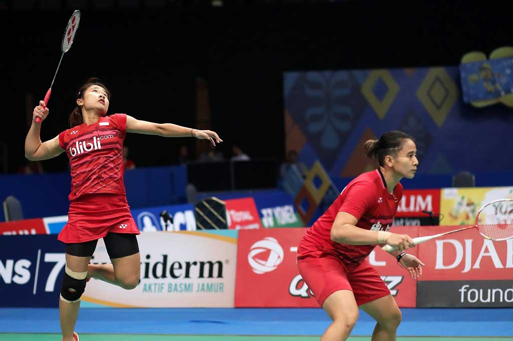

Tampilan Tugas
Badminton

Badminton
adalah suatu olahraga yang menggunakan alat yang berbentuk bulat dengan memiliki rongga rongga di bagian pemukulnya. Dan memiliki gagang.
Taufik Hidayat
Taufik mencatatkan namanya sebagai pemain tunggal putra dengan pukulan smash tercepat yang mencapai 305 km/jam pada semifinal Kejuaraan Dunia 2006 di Madrid.
Raket
dimulai dan dibuat dari bahan kayu sekitar tahun 1960-an kemudian bingkai logam raket juga mulai popular pada saat itu.